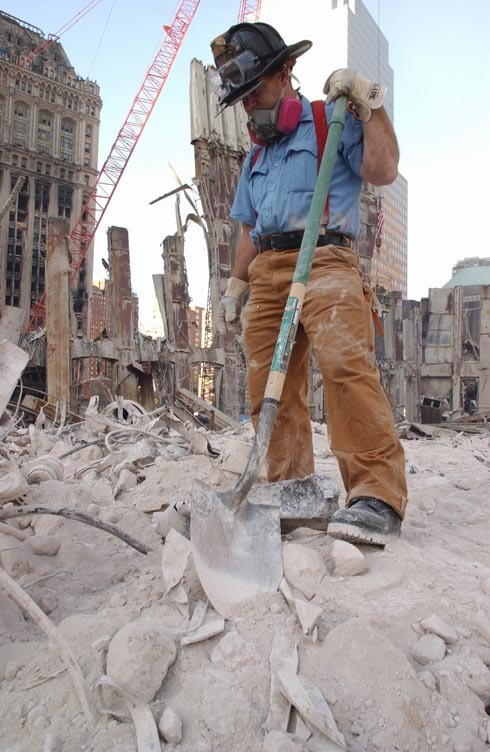
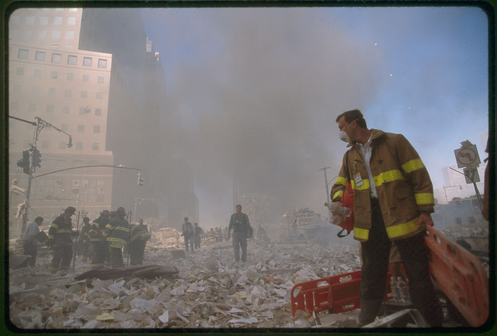

Scholarly Questions and Inquiry, or Badgering, Misrepresentation and Harassment?
For more information, see Dr. Greg Jenkins' "Directed Debunking Energy and Prof. Judy Wood," by Andrew Johnson
|
This was not a sponsored event of the National Press Club and it is fraudulent for Greg Jenkins or anyone else to present it as such. Greg Jenkins presents this carefully orchestrated deception as "scientific proof" of "something" and presents no scientific evidence relevant to the topic.
Prof. Judy Wood could have presented a non-linear second-order differential equation and subsequent derivations that would describe the deflections of a beam as a function of various parameters, showing superscripts on the subscrips on the superscripts of greek symbols. But, what does that have to do with the "hard evidence" presented on her website that is consistent with the use of directed energy weapons (DEW)? Someone claiming to disprove "hard evidence" with calculations is merely attempting to distract his audience away from reviewing this "hard evidence."
First, let us note that while Prof. Judy Wood was sitting in the audience of a colleague's presentation of Judy Wood's work, Greg Jenkins and his camera crew were sneaking in to another room through an adjacent room (which they had no authorization to be in) and were setting up professional cameras and lighting in the "special way" they were directed to set this up. If Greg Jenkins were truly interested in learning about Judy Wood's work and wanted to ask questions about it, why didn't he attend the presentation and the question-and-answer session that followed?
|
|
Greg Jenkins edited out the early part of this interview, showing that his camera crew were carefully repositioning the lighting and cameras. So, why did they reposition the cameras and lighting to film Greg Jenkins fairly straight-on, at a distance, with direct lighting, but chose to film Dr. Wood from the side, close up, with lighting from the side that put shadows across her face? Why do you think they did this?
This event does nothing to undermine the scientific merit of Dr. Wood's work. To the contrary. Who would want to invest so much time, energy, expense, and manpower into producing such a video? How does Greg Jenkins manage to explain the fact that some of his research is funded by the NSA? Yes, I mean THAT NSA; the one that has a vested interest in making sure the truth of 9/11 stays buried. I can not think of a higher, more direct indicator that Dr. Judy Wood is on the right track in assessing what caused WTC1,2 to be pulverized in less than 10 seconds than to be setup in an ambush video-manipulation by an NSA informant. Imagine that. Why would Judy Wood be the most important person to attack …and to attempt to persuade every 911 "truther" to attack?
Here's the evidence:
Greg Jenkins' PhD thesis may have been supported by the NSA as per the following links:
Annual Report: and here and here (archived here and here).
where the following acknowledgment can be found:
"This work was supported in part by NSF grant DMR-9705129 and by funding from the NSA."
Are you satisfied that Greg Jenkins has severed his links with the NSA; or, does that matter to you one way or another?
|
|
Here is a valuable exercise.
First, read the transcript. Then, watch the video.
Then, ask yourself why you might come up with a completely different conclusion from each of the two experiences.
|
|
Let us ask what kind of person would even want to make a researcher of the TRUTH look bad?
I cannot imagine how anyone in search of the truth would think that what Greg Jenkins orchestrated was in search of the truth. Those who are truly in search of truth would not use deception. Greg Jenkins used deception to plan his "surprise" event, used deception to carry out his "surprise" event, used deception in "preparing" his product, and used deception in promoting his product. One must ask, "Why?" Why did what he was planning and doing require deception? Why did he CHOOSE to be dishonest in what he did?
And, why would another "researcher" recruit such an unethical and dishonest hit job on a "fellow researcher"?
|
SURPRISE INTERVIEW of DR. JUDY WOOD, PREPARED for by DR. GREG JENKINS
WASHINGTON, DC, JANUARY 10TH at approximately 11:00 PM.
|
|
|
Figure 2. The video produced by Greg Jenkins.
34:31 URL Video
|
Click here for separate page with video only.
Click here for separate audio-only file. |
|
Why does Greg Jenkins feel it is necessary to "tell you" how to interpret what you are about to see at the start of his video by showing images that were not shown or discussed in the "interview"? If Greg Jenkins wanted to discuss these images, why didn't he show them to Dr. Wood or even mention them? And why does Greg Jenkins feel it necessary to "tell you" how to interpret what you just saw at the end of his video?
None of the images presented in Greg Jenkins' video were shown to Dr. Wood during the interview. So, why has he spliced in these images as well as a discussion by someone who wasn't part of this "interview"? If this were intended to be an unbiased interview with Dr. Wood, why is it that Greg Jenkins failed completely to communicate with Dr. Wood the topics he wished to present in his video?
|
|
|
|
|
Figure 3. The 'snowball' picture referred to in the discussion. The photograph he provided during the interview was, like the one above, of poor quality and did not show the detail visible in the color version that was inserted into the video. At the end, Greg Jenkins insisted on the return of the photo he provided, as can be seen in the video. Why would he insert a different photo for the audience than the one he showed to Dr. Wood?
|
GJ: I'm speaking today with Dr. Judy Wood. She received her BS in Civil Engineering in 1981, MS in Engineering Mechanics in '83, and Ph.D. in Materials Engineering Science in 1992 from the Department of Engineering Science and Mechanics at Virginia Polytechnic Institute and State University in Blacksburg, Virginia. From 1999 to 2006 Dr. Wood has been an Associate Professor in the Mechanical Engineering department at Clemson University, Clemson, South Carolina. Among other skills she is an expert in the use of moiré interferometry, a full-field optical method that is used in stress analysis. And, ...ah I wish to extend my thanks to Dr. Judy Wood for um ..ah taking time out of her schedule to for this interview, and ...um on behalf of our ragtag band called DC 911 Truth I welcome you.
JW: Thank you.
GJ: Well, thank you. ...Um, I guess the first question, ...ah ...ah question is, is you have, ...um, come up with some ideas regarding space-based weapons and ...um the demolition the demolition of the World Trade Center Towers, and and I was wondering ...um if you could give like an overview of the proposed types of weapons that could be used for such a thing.
JW: We haven't gotten into listing them yet. Just Energy Weapons.
GJ: Uh... what form?
JW: I don't think we even need to define them. What we did was assemble all the pictures, evidence that we trusted, and just going through the evidence just looking at it. At that point what motivated this paper was, we've been told this story, that story... - let's wipe the slate clean and start over. Let's see what evidence we do believe instead of relying on this rumor mill. We're told about hot metal but nobody's ever seen a picture of these rumors of hot metal. Let's see if we can find any pictures of it. Let's see what we can see. And so I started looking through pictures and pictures and pictures. What were they telling us - what's the evidence? And what categories of information? And you start putting these categories of information together and it starts building in one direction and eliminates various other possibilities.
|

|
 |
| Figure 4(a). Mostly unburned paper mixes with the top half of the Twin Towers. As seen a block away, a large portion of the towers remains suspended in air. This dust looks deeper than one inch. Most of the curb looks filled in. (9/11/01) |
Figure 4(b). Scooping up the building.
(9/??/01) |
GJ: No matter what the beam which is used in this situation - I guess the term you use is 'dustification' - I guess another way you could look at it is....
JW: I thought I'd invent a new word.
GJ: Mine as well, right?
JW: Poof!
|
|
|
Figure 5. Poof!
(9/11/01) |
GJ: ... or the vaporization of the metal in the towers, one or the other. Have you had, do you have any energy calculations at all to get a scale for what is involved for doing that?
JW: Yes, but we don't need to get distracted by those values. If you look at the pictures, and you look at the scrap pile when it was all done with, is there any question that the building was pulverized?
| Whatever numbers someone calculates doesn't change the facts. To focus on such calculations is simply a distraction from the REAL DATA. What is he hoping the calculations will show -- that the building is still there? Or that the building is gone? Why not just look and see if the building is still there? |
| Prof. Judy Wood could have presented a non-linear second-order differential equation and subsequent derivations that would describe the deflections of a beam as a function of various parameters , showing superscripts on the subscripts on the superscripts of greek symbols. But, what does that have to do with the "hard evidence" presented on her website that is consistent with the use of directed energy weapons (DEW)? Someone claiming to disprove "hard evidence" with calculations is merely attempting to distract his audience away from reviewing this "hard evidence." |
GJ: Well I do have some questions, but you know um, ah ... I've come up with an energy scale ah for the problem. If if you use, like, say, a photon beam , a laser beam of some kind, um you run into some problems, namely, the the amount of energy required to evaporate the steel in the towers is...
JW: Wait, you're specifying evaporation?
GJ: Sure.
JW: What about dustification? Isn't that what we're talking about?
GJ: You want to talk about dustification?
| Doesn't Greg Jenkins remember the topic he brought up? |
JW: Well, pulverizing the building is turning the building contents into nanodust, we'll call it.
GJ: Okay. Right now, I don't know, ah, maybe ah anything... has this been done in the laboratory? Has anything been done that would turn steel into dust?
| Hasn't Greg Jenkins heard of explosives? |
GJ: What?
JW: Various types of energy beams.
GJ: What kinds of energy beams?
|
|
|
| Figure 6. The microwave oven was first discovered in 1945 by Percy Spencer. The first Radarange was produced in 1947 by Raytheon. See how far Raytheon has come. |
JW: You put something in your microwave oven and leave something extra long and see what happens to it.
GJ: That's food. That's not metal.
JW: Or something else.
GJ: If you put metal in a microwave it will reflect off of it.
JW: Hey, I haven't tried a fork in there. I know you're not supposed to, but I'm waiting for someone else to do it, to see what happens.
GJ: Yes, it's kinda fun. Also, if you burn a disc, like a CD or something, stick it in the microwave. It makes a nice little show for you, so you might try that. It's kinda a fun thing to do. But the thing is, I don't know of a way to dustify steel in any situation, and...
In any situation? Hasn't Greg Jenkins heard of explosives?
What happens if you use sandpaper on metal?
If he doesn't know this, how can he be qualified to as an authority on it? |
JW: Let's talk about physical principles.
GJ: OK.
JW : If you heat steel... and if you heat some kind of... pick some particular kind of element, and heat it, with a particular vapor pressure, it evaporates.
GJ: It evaporates, yes.
JW: So if you have enough temperature, enough energy, you can quickly put a lot of energy into something, it'll go ''poof''.
GJ: It will evaporate, yes. Correct.
JW: And if you do that to one surface, maybe the surface right below there, it doesn't necessarily do the same thing to, because there's a different process going on from the direct hit and the indirect hit.
GJ: That depends on the heat conduction of what you're trying to evaporate.
JW: No, not heat conduction! We're talking about the depth of an effect on a molecule. Why does the paper towel in a microwave not burn when water heats up?
GJ: Because it doesn't have water in it.
JW: Right. So the energy does one thing to paper, does another thing to water.
GJ: That's because microwaves are absorbed by water, and the paper in the towel is not absorbed by water. It has to do with the resonant energy of water.
JW: So if you have some kind of energy you put into a particular element, that excites that particular element...
Is Greg Jenkins aware that microwaves affect paper differently than water?
And is Greg Jenkins aware that the signal from a TV remote control is yet a another form of energy? |
GJ: If you excite an element you're talking on the scale of EV to excite the electrons. If you're talking about a crystal, then you're talking about the bonding energies associated with that crystal. So if you're talking about steel...
|
 |
| Figure 7. There are a variety of wavelengths and they have different effects on different materials. |
JW: Hang on, hang on. There's a slide that presents this information that I've started using. First you figure out what happened, then you figure out how it happened, then maybe why it happened, then who done it. But you've got to start and do it in that order. You've got to figure out what happened..
GJ: OK...
JW: What happened doesn't depend on what you know about, and here's the example I gave [at] the talk I gave in Seattle. You know, the slingshot, the BB gun, and ... oh, pick something else... firecracker. That's all you know about. So if you can only pick from those if you're going to describe what happened to the Twin Towers... Does that make sense?
GJ: No.
JW: Good. If you don't know about what was used, it doesn't mean it didn't happen.
GJ: Well, ...
JW: We need to figure out what happened first, ...then how it happened is down the road.
GJ: Okay, can we talk about your analysis on what happened?
JW: Yes. That's really where we are right now.
GJ: Okay. That's great.
JW: We don't know the serial number on the gizmo that was used, or was it something that came from somewhere else...
GJ: Okay. So, one thing that is puzzling to me that you had calculated the ratio of a building that was the Kingdome, right? And you looked at the ratio of before collapse height to the ratio of after collapse height...
The height used for Potential Energy (PE)? or for rubble height?
For PE, it depends on the mass as well as the height.
|
JW: Not the height, the mass. There's an approximate number of ballpark numbers...
GJ: You've come up with 12%, or something like that, for the before and after collapse height.
JW: There's 30 feet - it's been a long time since I looked at those numbers - the Kingdome was 30 feet, and I think it was something like 250 feet, originally?
GJ: Well, I have the number, and you quote on your website as it being...it could be 12 point something per cent, but it was about 12%.
JW: That page is in the most rough state possible. You can probably see it's half done, we haven't really touched that since I first started posting it, so I'm not really familiar with the numbers now since it's been so long...
GJ: Okay. That's fair enough.
JW: I haven't done the triple, double checking, but I've looked at general trends, and general trends - you have a 30 times difference in potential energy. That was the biggest thing I'm focussing on. Now looking at the rubble pile when you're all done with, let's look at the pictures. You know, exact numbers -- who cares? Let's look at the pictures. You have these little people, look like tiny ants, this huge outer edge of the Kingdome...
|
|
|
Figure 8. (3/?/00) What remains of the Kingdome
People standing near the base of the rubble (lower right area) look like tiny specs compared to the height of the rubble. |
JW: ...and if you recall the World Trade Center, they had, when they were looking for survivors, they had the rescue workers, they walked horizontally.
GJ: Yes.
JW: And they repelled down.
GJ: Yes.
| He acknowledges the minimal rubble pile and that the basements were not filled with debris! |
|
|
|
|
| Figure 9(a). (9/11/01) On the afternoon of 9/11/01 the "rubble pile" left from WTC1 is essentially non-existent. WTC7 can be seen in the distance, revealing the photo was taken before 5:20 PM that day. |
Figure 9(b). (9/11/01) The "rubble pile" from WTC1 is essentially non-existent. The ambulance is parked at ground level in front of WTC1. WTC6, which had been an eight-story building, towers over the remains of WTC1. |
|
|
Figure 9(c). (9/13/01) In contrast, the rubble pile for WTC7 appears to be higher. Why does a 47-story building appear to leave a taller rubble pile than either of the two 110-story towers left? WTC5 (9 stories) can be seen in the background on the left.
Source: |
 |
| Figure 10. Going down into the basement of WTC2 to look for survivors. (9/18/01) |
JW: They didn't have to climb up over, you know, many times their height.
GJ: So in that ratio , if you do look at the numbers and you use your analysis for the kingdome...
JW: Which numbers?
Which numbers? Height used for Potential Energy (PE)? or for rubble height?
|
GJ: On your website you had stated a certain average height of the Kingdome before collapse, and a certain height...
JW: The center of it or just the average shape? And it really would have been lower if you looked at the actual... I was looking at easy-to-find numbers, but the error would be in favor of, it would make a thirty times bigger number.
GJ: OK, it would make it bigger than your 12%.
|
|
|
|
| Figure 11(a). Where is WTC1? The WTC7 remains look tall compared the WTC1 remains. |
Figure 11(b). Where did the building go? These folks have just emerged from their hiding places and look stunned to find that two 110-story buildings are suddenly missing. |
JW: Because I have it that it's too high already.
GJ: I see.
JW: Because the roof is very thin.
GJ: Yes, it is.
JW: And so if I'm saying just from the shape, you have the cylinder with the spherical cap on it, and I'm saying it all is the same weight per volume.
GJ: Yes.
JW: And the top part's really thin.
GJ: Yes.
JW: You're giving it too much benefit, so that's making the center of it too high...
GJ: Correct, and I agree with that, I definitely agree that's a good way to look at it.
JW: The error is in... 30 is a low number.
GJ: Right. Now, on the rim of that, when you take the after-collapse height, the rim, it's mainly concrete, like the structural concrete.
JW: I'm not talking about the volume of the thing, I'm talking about...
GJ: I understand.
JW: ...there's quite a lot of places where somebody measured that. I didn't measure it. According to the reference I provided, that's the number they gave.
GJ: OK.
JW: Then I look at the comparative height. The towers were a whole lot taller to begin with.
GJ: Yes, of course.
JW: About four times or so?
GJ: The towers were 110 floors, roughly 12 feet, and so they were about 1350 feet tall.
JW: 1368 feet.
GJ: Yes.
JW: I don't remember exactly the equivalent in stories of the other one...
GJ: Well, if you take the collapse ratio and say it's 12% of the height, then it would be 13 or 14 floors you had come up with on the debris height. That's what you did on your website.
JW: I haven't looked over that page in a while.
GJ: I'm just trying to refresh your memory.
| So if Greg Jenkins has studied Dr. Wood's web site and has memorized all of the numbers presented there, why is he quizing Dr. Wood to recall exact numbers that are on those pages? What is the purpose of this discussion? |
JW: OK. I thought I'd made some equivalent of how many floors the 250 feet was worth at the Kingdome. But in any case, I said that 13 or 14 floors... if you start looking around the WTC site, is there anything that's that tall?
GJ: No, but it didn't collapse in on its footprint either.
JW: True. Why didn't it?
GJ: Because it didn't.
What kind of logic is Greg Jenkins using? "Just 'cuz"?
Why can't Greg Jenkins answer this question?
You can't have it both ways. Did it collapse or didn't it? |
JW: Where did it "collapse"?
GJ: It collapsed in a radius six times its footprint.
JW: Six times its footprint?
GJ: Yes.
JW: I think if you want to count the material it's probably like a million times its footprint. It went in the upper atmosphere. You know, where do you stop counting it? Is it a mile away - the dust...?
[to return to the bottom, click here]
|
|
|
|
| Figure 12(a). Ground-level view of the enormous quantity of dust wafting skyward. Conventional demolition dust does not do this. (9/11/01) |
Figure 12(b). "Fumes" from the disintegration of material drifted upward for days. (9/12?/01) Source |
GJ: You can take any kind of distribution you want. The rough radius was roughly, makes an area of six times bigger, if you look at the debris coming down off of that building.
JW: But what are you calling debris? Are you calling this nano-particles?
GJ: Nano-particles?
JW: The very fine, ultra-fine dust that was in the upper atmosphere for months.
GJ: The dust was an average of 70 microns large.
JW: Which dust?
|
|
|
|
|
Figure 13(a). This dust appears to be quite fine. Source (9/11/01)
|
Figure 13(b). This dust appears to be quite fine. Actually, these cars appear to be turning into this very fine dust in this picture. (9/11/01) Source:
|
GJ: ...of all the dust which was sampled by USGS.
JW: Did they sample the stuff in the upper atmosphere?
GJ: I didn't see a lot of stuff go up into the upper atmosphere. I saw it all come down first, and then it spread out at that point. So as it's coming down...
JW: Maybe you should review the pictures.
|
|
|
 |
|
Figure 14(a). This photo was taken shortly after the demise of WTC1. It is approximately 10:35 AM. Why is all of the sunlight blocked out if the dust didn't go up?
Source:
|
Figure 14(b). A first responder couldn't see his hand in front of his face until the vehcles began lighting up. Only then did he have enough light to see where he was going.
Source |
|
|
|
| Figure 14(c). The demise of WTC1. (9/11/01) Source |
Figure 14(d). What do you call the debris field? (9/11/01) Source |
GJ: I have reviewed the pictures.
JW: The video I have of the Kingdome...where the roof height is...this is about the highest where the dust comes up (indicates with hands). The thing goes "poof," it goes down, it goes sideways. It doesn't go into the upper atmosphere. And if you look at -- well, even Jim's pictures he showed tonight...the "fingers" coming up. They go up and up and up.
GJ: A lot of that was the oxgyen-starved fire that was going up into the upper atmosphere, because it was there even before and during the collapse.
|
|
|
|
|
| Figure 15(a). This dust appears to be going up. This is after the destruction of WTC1. (9/11/01) Source |
Figure 15(b). This dust appears to be going up. This is after the destruction of WTC1. (9/11/01) Source |
Figure 15(c). This dust appears to be going up. This is after the destruction of WTC1. (9/11/01) Source |
JW: There are some smoke bombs going off.
GJ: My point is not really what it was, but it was there before and after the collapse.
JW: After the quote collapse, you have this ultra-fine dust going into the upper atmosphere. How long does that oxygen-starved fire survive in the upper atmosphere?
GJ: How do you know it was ultra-fine dust and what do you mean by that?
JW: Why is it going up?
GJ: Because of the hot air. It's not really the issue. We're talking about the radius of the collapse field.
| Your issue was the size of the debris field. That is what is being addressed. |
JW: Have you seen some of the satellite images?
GJ: I've got pictures right here, if you'd like to see them.
JW: It goes over, maybe, it covers the East Coast, the Eastern Seaboard.
GJ: Right. Eventually it does, because of diffusion, and just the heat of the energy being expelled will make that expand out.
|
|
|
| Figure 16. This is a photograph taken from the International Space Station a day or two after 9/11/01. How far would you say the "debris field" covers? Greg Jenkins says this material is moving into the upper atmosphere "because of diffusion, and just the heat of the energy being expelled." |
GJ: Now, if you look at this picture...
JW: Thank you. This is a good example. It's going straight up. Imagine that.
GJ: That was smoke that was there before the collapse.
JW: What, down here on the fiftieth floor? The fortieth floor? I thought the fire was up at the eightieth floor.
GJ: I know all that dust... that picture right there... that dust was there before the collapse, because that's the smoke coming from the fire. [Emphasis added.]
| He knows it's dust because it's smoke? Dust is not smoke. What subject does he want to talk about? Dust or smoke? If we are talking about the radius of the debris field, why is he concerned about "smoke"? Wasn't the issue how far the dust was being spread? |
JW: But this (points to Banker's Trust building) is a forty-story building, so this is emanating from the fiftieth floor.
|
|
|
|
Figure 17. The 'snowball' picture referred to in the discussion. Note Banker's Trust, the black building in the foreground, is a 40-story building. The photograph he provided was poorer quality and did not show the detail visible in the color version he inserted into the video. At the end, Greg Jenkins insisted on the return of the photo he provided, as can be seen in the video. Why would he insert a different photo for the audience than the one he showed to Dr. Wood?
|
GJ: What's emanating from the fiftieth floor?
JW: The stuff that's going up.
GJ: How do you know the stuff emanating from the fiftieth floor is going up?
| Why does Greg Jenkins want us to believe all of the debris is going down? |
GJ: There's stuff going down in that picture, that's my whole point.
JW: You've just gone around a full circle. You're saying it was there before the tower went 'poof?' But the tower is in good condition up to about the seventieth floor or whatever it was.
|
GJ: It wasn't that high.
JW: I didn't see the fire down here.
GJ: Could we go back to the original point? I mean...
JW: But this is what you're asking about here.
GJ: I'm asking about the radius the debris falls on the ground.
JW: Wait a minute! Because this wasn't working for you, you wanted to change to another subject?
GJ: No.
JW: We'll stay with this one. Here the dust is going straight up. Well, that's where we came from because you were saying the dust all went straight down, and I'm saying the dust goes up, and I'm using this picture to emphasize that it goes up. Here's about where the fiftieth floor would be. If that's a forty-storey building, the fiftieth floor is just about there, and it looks like all the stuff coming up is coming from there.
GW: (No reply)
JW: So where's the rest of the building?
GJ: Well, I ... I don't know.
JW: Oh, wait a minute, you're saying it burned up in four seconds? Five seconds?
GJ: I didn't say the building burned up. I said there was smoke from the fires that went up.
| But, wasn't the subject matter the debris field ...which was the dust? |
JW: But if there were some fires, fires were up here (indicates 80th floor). This was fifty stories, so where would that make 110 stories, like up here? (indicates).
GJ: It wouldn't be that high, no.
JW: Well, we don't see the bottom of the building.
GJ: But you know roughly what the width of the building was, that ratio.
JW: It's somewhere up here (indicates).
GJ: The width of the building is 200 meters and the height is like 1300 meters [sic].
| Greg Jenkins appears to be getting flustered and confused. Certainly the building is not 200 meters wide nor 1300 meters tall! [WTC1 was 208 ft x 1368 ft tall. (200 meters x 1300 meters is 656 ft x 5265 ft!)] Why has this conversation put him off balance? What is it about this subject being discussed that has made him so nervous? |
JW: 1368 feet. And we don't see the bottom here. The bottom's down there somewhere (indicates below picture). So, if this is a forty story building here, we don't see the bottom of the building. It's probably about that big (indicates). We're now up to the eightieth floor, so it's going to be about somewhere in there (indicates).
GJ: OK.
JW: So if you have something up here (indicates). - and that's where the fire was - why is the smoke coming from down here? (indicates).
GJ: I don't know why it is coming from down there.
JW: What about this part of the building ( points to top )?
GJ: From that picture it looks like a lot of it goes down.
JW: Where's it going down?
GJ: You don't see any parts of the building going down there?
| Why is he asking this question so many times? What is the purpose? |
JW: I see that we have about one third of the building left. Two thirds of the building is missing, and it's not in the volume of this 'snowball' as I call it, to account for two thirds of the building.
GJ: So, what's going down? Is there any debris falling?
| Why is he asking this question so many times? What is the purpose? |
JW: I don't see anything that's really falling there.
GJ: You don't see any debris falling from the building?
| Why is he asking this question so many times? What is the purpose? |
JW: I see a round snowball. I call this a snowball.
GJ: Okay, so there's no debris falling in that picture.
| Why is he asking this question so many times? What is the purpose? |
JW: I didn't say no debris.
GJ: How much debris? What debris is falling in that picture?
| Why is he asking this question so many times? What is the purpose? |
JW: I see some... I don't have a magnifying glass. Sorry!
GJ: Oh, it's that small you can't tell what's falling from the picture?
| Why is he asking this question so many times? What is the purpose? |
JW: Below this point here (points to bottom of the snowball). I don't see much difference. It looks like the building is in good health. There's a little bit of cloud of haze there, but... I don't see any major material and the building is still completely intact from this point down, at that moment, below the snowball.
GJ: So you really don't see any falling debris there?
| Why is he asking this question so many times? What is the purpose? |
JW: Are you asking these questions for sincere, honest purposes?
GJ: I really am. This is sincere. I see falling debris in that picture and I'm wondering, I can't fathom why you don't see falling debris in that picture. It's hard for me to understand.
JW: Maybe ...
GJ: Because maybe I don't understand what you're trying to say.
| Is Greg Jenkins asking this question over and over again, hoping to get a different answer? |
JW: I'm not saying there is absolutely no debris, because someone may have had some, like, pennies on their windowsill that fell out. They might be falling down. But it's not a significant volume of material.
GJ: I see. OK.
JW: The snowball here is about... it's bigger than the width of the building, and about that same amount in height. So, it's a little bit wider, but you can't say it's the density of the building.
GJ: No, you can't say it's the density of the building.
JW: It's less dense, so we're missing two thirds of the building already...
GJ: Yes.
JW: ...where did it go?
GJ: I don't know. I saw it go down, but maybe I don't remember seeing the videos right or something.
| Why does he need to remember the videos? Isn't the subject being discussed about what can be seen in the picture he provided? |
JW: I don't see it below that point.
GJ: That's because this is a picture shot before the whole building collapsed. It's during the collapse.
| So now Greg Jenkins acknowledges that the debris has not fallen to the ground because it's "during the collapse"? |
JW: "Collapse?" If it were a collapse I would expect to see the material piled up. If it were literally a collapse, this is about two thirds of the building. How compact might that be...
GJ: Remember the ratio of the building is 200 meters wide by 130 meters tall [sic!]. OK.
JW: ... But you have this perspective of depth in the picture. I'm just going by this is a 40 story building, and its bottom is below the picture. That's 40 stories, that's 40 stories, that's 40 stories, so 110 is up to here. So between here and here you have a whole lot of building to account for. And it's 207 or 208 feet wide all the way up to that point, but it's still two-thirds of the height.
GJ: The width is two thirds of the height?
| Perhaps it's too late into the night for Greg Jenkins. He's losing track of the conversation. Or is he simply flustered by frustration in not being able to manipulate Dr. Wood as he had hoped? Or is he trying to trick her into saying something he hopes to use against her? [WTC1 was 208 ft x 1368 ft tall. (200 meters x 130 meters is 656 ft x 526.5 ft!) I think it's fairly clear that the WTC towers were much taller than their width. So, there must be something here that has put Greg Jenkins off balance.] |
JW: No. The amount that's missing is two thirds of the height.
GJ: OK. All right.
JW: It's missing, and this snowball can't account for it all. Where'd it go?
| Let's see. The dust is not on the ground. Two-thirds of the building's height is missing. Where did it go? Could it be that a large amount of the building's material sufferred molecular dissociation -- and Greg Jenkins is working hard to keep the conversation from illuminating this? |
GJ: Well, I'm not sure if that's... I mean, I'm not sure if that accounts for it all. I saw a lot of debris go down from that building, and based on that picture it seems plausible to me that most of the building is within that debris.
Comment from audience: (inaudible) ...the pyroclastic flow that happened.
JW: It hasn't got down to any point to flow anywhere yet.. It's just...this material here is all that's left, except for what's going up.
Audience member: So is the pyroclastic flow included in the debris moving out?
JW: I wouldn't really call this a pyroclastic flow. I would call this explosions. This part of the building is being exploded out.
Audience member: You were both disagreeing on the amount of debris, how far it went away. I just wondered if you include that in the debris (inaudible)...
|
 |
 |
Figure 18(a). Gone with the Wind
At the corner of West and Vesey, looking southeast toward the WTC complex. WTC1 just went poof and the people are emerging from their hiding places and slowly approaching the site with puzzled looks on their faces. "Where'd it go?" (9/11/01) Source:
|
Figure 18(b). Gone with the Wind
This picture is from the Library of Congress. The picture is taken on Vesey Street, looking west across West Street. The toasted parking lot is on the right in the distance. This picture was taken after WTC1 went poof (sunlight is on WFC3, on the left). The paper in the foreground is not on fire. Why is the parking lot on fire at some distance away? (9/11/01) Source:
|
JW: I'm just saying there's not much building left. I'm not saying exactly what radius it goes to. You have inch deep dust a mile or two away. Do you count that? It gets spread all over the place. But what I see in this picture is we don't have much building left, and it has yet to hit the ground.
GJ: OK (searches through papers) Um...
JW: I'm glad you brought this. This is my favorite picture.
GJ: Excellent. I'm glad. Well, I guess that accounts for why you put it on your website. OK. All right. So, for any kind of beam weapon to annihilate the steel or anything like that, you would have to pump in a certain amount of energy to do that.
JW: It depends what wavelength and what energy you use.
GJ: No. The energy doesn't depend on the wavelength.
JW: It does to the extent of how efficient that energy is with that material.
GJ: OK. All right. So if you pump in a laser to heat the building up...
| Why has Greg Jenkins chosen a laser and why does he mention "heat the building up"? Where is he going with this? |
JW: Think how much energy it takes to heat a cup of coffee in my microwave versus that same water on the stove. Different amounts of energy...
GJ: True. That's because we know that the microwave is exciting the resonant energy of the water to heat your coffee.
JW: The heat is exciting the water too.
GJ: Right, but it still takes the same amount of energy to heat that coffee no matter how much energy you lose.
| No matter how much you lose? How much do you have left if you've lost it all? |
JW: But it's a lot less efficient.
GJ: Okay. If you assume that you don't lose any energy at all, okay, and you vaporize steel, you can calculate what energy is involved in vaporizing steel. It doesn't matter how you do it.
JW: Yes, it does.
GJ: No, that would only increase the number.
JW: How about if you heat the water up by putting a resistance across it versus putting a fire next to it?
GJ: The minimum amount of energy to evaporate a wire, by fire, by electric current, by anything...
JW: We're not talking about evaporation. This is like, kind of, being silly. You started out talking about dustification, then you're talking about beam energy, then laser energy, then it's about vaporization...
GJ: This is not me, this is from your website. It's you saying these things.
| Perhaps Greg Jenkins needs to review the website to learn what it is about. |
JW: I'm taking about the data on my website. I'm not making calculations for how much you took for anything, as I don't think we should get distracted with that...
GJ: Conservation of energy is not a distraction.
| Whatever numbers someone calculates doesn't change the facts. To focus on such calculations is simply a distraction from the REAL DATA. What is he hoping the calculations will show -- that the building is still there? Or that the building is gone? Why not just look and see if the building is still there? The towers are gone, so there was enough energy to make them go "poof". |
JW: (holding up photo of South Tower) Is this pulverized?
|
|
|
| Figure 19. Is this pulverized? (9/11/01) Source |
GJ: I see falling debris there. Now, maybe it's not, maybe that's a different picture of something else, I don't know.
JW: The building is pulverized, and ...when the story is over with at the end of the day, you don't have much building left, anywhere. The buildings are gone...like, let's look at Building Six for example. You have these big holes with nothing in them. Where did the material go?
GJ: If you melted down all the steel in the...
JW: Where did it go?
GJ: If you melt down all the steel in that...
JW: You've changed the subject.
| Greg Jenkins obviously did not want to talk about building six and its holes. |
GJ: No, no, I'm not. I'm really not. If you bear with me you'll see that I'm not. ...in the 110 floors of the building, if you melted down the steel into its footprint it would only be six feet tall. There'd be one slab, the cross sectional area of the building six feet tall..
| Golly, does he think this explains a debris pile? ...especially one that is less than six feet tall? |
JW: How about the concrete? How about the bookcases and so forth? It'd be more than six feet tall.
GJ: Not much. Not if you melted it all down. Okay. I'm just saying that is the amount of steel.
JW: Is that what you're saying....
GJ: Those buildings really were mostly empty space by volume, so you have to do some analysis...
JW: Is dust more dense than solid steel or is it less dense?
GJ: Of course not. It's much less dense.
JW: Okay, so how much do we have?
GJ: How much of what should we have?
JW: (no reply)
GJ: Of steel? Or of concrete?
| Why is Greg Jenkins pretending to not follow the subject? |
JW: This is not productive. It's not educational.
GJ: It's educational for me.
JW: What's the subject now? Is it steel, is it concrete, or is it dust?
GJ: You choose. Please.
| If this is an "interview," why doesn't Greg Jenkins know what question he wants to ask? What is he trying to learn? |
JW: This is a game you're playing.
GJ: I'm really not playing a game. I'm just trying to figure out what it is you had on your website. I'm just asking questions regarding...
JW: What is your question? Ask the question, and we stay on that subject, through the whole sentence.
GJ: Through the whole sentencing? [sic].
JW: See if you can handle that.
|
GJ: Okay, I'll see if I can handle that. Let's see. All right. The buildings collapsed in a larger area than their footprint. Would you agree with that statement or not?
JW: No.
GJ: No?
JW: They did not collapse.
|
|
|
Figure 20. What motivates Greg Jenkins to call this a collapse?
What motivates Greg Jenkins to manipulate others into calling this a collapse? |
GJ: (Pause) How big was the debris field?
JW: We covered that already.
GJ: What was your answer? I didn't catch it.
|
|
|
|
| Figure 21. Ground-level view of the enormous quantity of dust wafting skyward. Conventional demolition dust does not do this. |
Figure 22. This is a photograph taken from the International Space Station day or two after 9/13/01. |
Comment from audience: Couldn't there be an answer that they collapsed and were pulverized at the same time? Both things happened?
JW: That's very misleading. ''Collapse".
|
| Security guard enters the room and tells the Greg Jenkins camera crew they must leave. |
GJ: OK. Well, thank you, I really appreciate your time. Thank you very, very much for clarifying some of these issues. I certainly have learned a lot here. I think the people who will view this video will have learned a lot as well.
JW: To see how welcoming I am to questions? To playing games?
GJ: I don't think it was a game. It wasn't a game to me. So...but I do appreciate your patience, and your time for answering my questions. Thank you.
JW: Oh, you want that picture? Good.
GJ: Sure.
JW: Please study it.
Member of the audience: [A member of the audience apparently asked GJ who's interest he was trying to protect..]
GJ: I'm not trying to protect anyone's interest. I'm just trying to find out what scientific basis...
| If he wanted to know about the science, why didn't he ask scientific questions? Instead, it appears that he revealed what he was trying to cover up. |
|
Comments from viewers of this video
|
"If this was intended to be an unbiased interview with Judy Wood, why is it that Jenkins failed completely to communicate with her but instead insisted on terminology and interpretation that was guaranteed to confound any intelligent response? If this was supposed to be objective why the gratuitous insertion of Jenkins' eye rolling reactions, his dismissive and patronizing tone and the derisive montage and music at the end? At the very least it demonstrates that Jenkins is not a very capable interviewer who brought so many prejudices and preconceptions into the situation that it precluded equable dialogue. At worst it seems like a wanton assault on a new theory.
Critics of the DEW theory are wont to point out that the existence of these weapons is unlikely. And yet the military has been conducting research on DEWs since the fifties with some considerable success. There are working models of DEWs that have been successfully deployed. But where is the incontrovertible evidence of some variety of "super-thermate"? There are many references to this substance as instrumental in the destruction of the towers in Dr. Jones' paper but no specific examples. Even more than DEWs, superthermite seems to exist more as a conception in the mind of the theorist than as a demonstrable reality."
|
|
"In composing the particle beam theory, I think Dr. Wood has provided some valuable new insights into what happened. The DEW theory more completely addresses the scale of the destruction to the towers than Jones' theory does. Jones offers an explanation which relies on a well-known and understood technology, controlled demolition, as the cause of the tower's destruction. ...nowhere does he provide factual evidence of the existence and availability of "superthermate." Which makes his theory just a speculative as Woods'.
I think that people who need closure on these traumatic events have unconditionally embraced Dr. Jones' theory and closed their minds to alternative explanations. And I think that for some people in the 9-11 Truth Movement find Dr. Jones to be a more marketable entity."
|
|
"I know of some people who attended the meeting and who chatted with several members of DC911Truth. Those present saw something quite different from what Greg Jenkins reported. Mind you, that is not unusual. People's perceptions differ. I don't say you are wrong.
I do say that others saw the event differently and reported on it differently. As a matter of fact, the audio segment of the video (recorded by a hand-held pocket recorder from across the room) is, in actuality, quite clear in both tonal quality and in innuendo that Greg Jenkins was flustered in not being able to trap Judy Wood as he had hoped. (Curiously, the audio portion of the Greg Jenkins video, recorded by a professional camera crew, is not nearly as clear.)
And that is what others reported. Another observation I heard from more than one source was that the interview did not go as Greg Jenkins thought it might.
At the event itself, Greg Jenkins was reported to have turned red faced and to have appeared flustered because his use of deception simply did not result in his obtaining any significant admissions of scientific error from Judy Wood. And that, by the way, was what he intended.
In that endeavor he failed."
(return to above)
|
|
"I am absolutely baffled by the assertions by Dr. Jones and his fans that the methodology and the evidence presented by Wood and Reynolds is unscientific and incomplete. As far as the possibility that DEWs of sufficient power to destroy two one hundred and ten story office towers exist, there is abundant documentation provided by Wood and Reynolds that weapons development in this area, which is customarily many years ahead of what is released to the public, may have created just such monstrous devices. Wood and Reynolds document this area of weapons development with considerably more specificity than Jones does his all-purpose causal agent "super thermate."
You may disagree with their analysis of the bathtub, their analysis of the relative volumes of material before and after the disintegration of the towers, their analysis of seismic evidence, their analysis of the evidence of a no flight order that created a window of opportunity, their analyses of anomalous damage to vehicles and structures in the vicinity, but just how is this unscientific or incomplete? The visual evidence they have provided is extensive and Wood and Reynolds invite our examination of it, invite us to ask questions and do not ask us to make an unconditional commitment to their theory. Compare this to Dr. Jones who asserts that the controlled demolition hypothesis satisfies all of the available data -- this is an absurd and wholly unscientific conceit on his part. And as far as I am concerned Wood and Reynolds theory actually comes closer to satisfying all of the available data than Jones' theory, which if you look at it closely, is really rather incomplete and tenuous. Even Jones finds it necessary to tag on the need for unspecified explosives to account for more of the phenomena.
Your thoughtful comments are certainly welcome. But I find the hostile treatment of Wood and Reynolds ideas really disturbing. In my view, the video of Dr. Wood and prepared by Greg Jenkins is nothing more than an atrocious act of petty intellectual vandalism. Scientific inquiry, if it is to accomplish anything, requires an open mind and a willingness to keep questioning assumptions and conclusions however convenient or appealing they may be."
|
stevenwarran
Posted: Tue Jul 17, 2007
|
Quote OpLan:
Is she drunk?Medicated?What posessed her to speak in front of a camera when she is so obviously and embarrasingly unprepared?I'm gobsmacked..car crash TV at its finest.
|
Op Lan thinks by saying it, it is so, but he gets it exactly backwards. Other than needing to brush her hair and blow her nose, Dr. Judy Wood is the new media ready, as she stands her ground, not giving an inch to pretty boy physicist Dr. Greg Jenkins. She works him, and then she plays him and then she gobsmacks him in his backside. The intended lynching backfires, leaving poor Greg to whine on camera afterward, "I wasn't pursuing an agenda!"
Dr. Woods isn't privileged to be playing with the same full deck officials play canasta with. She dines on locusts and honey. Dr. Jenkins was born on third and thinks he hit a triple, just like you-know-who.
Wood's theory makes perfect sense. We stand at the beginning of a new age. Our government has in its hands a method of disrupting the molecular basis for matter, and its first impulse was to weaponize it. Is this so hard to understand? Like splitting atoms to create destruction was so hard to understand in 1945? Of course this new "invention" came when the United States ruled supreme. A weapon system of vast new power comes on line and we didn't have an enemy worthy of it, so naturally, we use it on ourselves, wag the dog.
Dr. Judy Woods is alternately abled, which is what we need going forward. The seemliness and comeliness and orderliness and decorousness of Dr. Greg Jenkins damns him as an insider minion pimping establishment bullcrap.
Wood's theory is the only theory that can make sense of everything, including an important component: what came after 9-11. Fully half of the 9-11 skeptic, or "truth" movement (in my wild, unscientific guesstimation) is professional, government-sponsored, clandestine gobbledigook, and what could be so important to keep shielded? Well, now we know.
We have only a very little amount of time to use our knowledge to perhaps effect the inexorable march to war with Iran.
It's done. It's over. The fat lady has sung.
|
|


{kind=link}